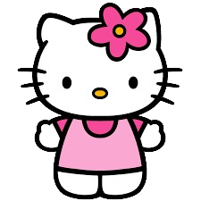
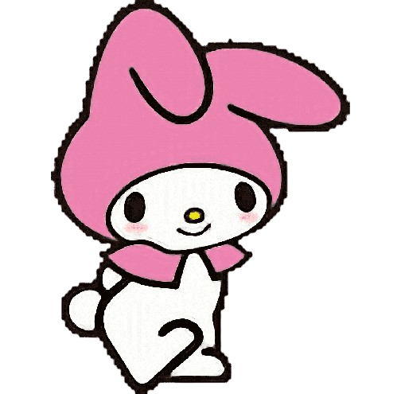
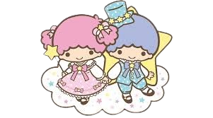

Hello Kitty

Cinnamoroll
My Melody

Kuromi

Tuxedo Sam
Pompompurin

Keroppi
Badtzmaru

Pochacco
Litle Twin Star
"Hello Kitty and Friends Adventure" adalah salah satu seri animasi yang mengikuti petualangan dari karakter-karakter ikonis Sanrio, termasuk Hello Kitty, My Melody, Dear Daniel, Keroppi, Badtz-Maru, dan lainnya. Dalam seri ini, karakter-karakter Sanrio menjelajahi dunia yang penuh warna dan penuh keajaiban, menghadapi tantangan, dan belajar nilai-nilai persahabatan, kerjasama, dan kebaikan.
Setiap karakter memiliki kepribadian unik dan kontribusi mereka sendiri dalam menjalani petualangan. Misalnya, Hello Kitty dikenal karena kecerdasannya dan sikap ramahnya, sementara My Melody sering kali menjadi sumber inspirasi dan dukungan moral bagi teman-temannya. Bersama-sama, mereka membentuk tim yang kuat dan saling mendukung dalam mengatasi rintangan dan menyelesaikan misi.
Karakter-karakter Sanrio tidak hanya muncul dalam bentuk mainan dan merchandise, tetapi juga dalam berbagai media lainnya, termasuk film, acara televisi, dan permainan video. Mereka sering dijadikan tema untuk pesta ulang tahun, kamar tidur anak-anak, atau bahkan pernikahan."Hello Kitty and Friends Adventure" tidak hanya menghibur anak-anak dengan cerita-cerita yang menarik dan visual yang menakjubkan, tetapi juga menyampaikan pesan-pesan positif yang mendorong pemirsa untuk bersikap baik satu sama lain, menghargai persahabatan, dan selalu berusaha melakukan yang terbaik. Seri ini telah menjadi favorit di kalangan penggemar Sanrio di seluruh dunia dan terus memikat pemirsa dengan daya tariknya yang abadi.
| ૮₍˶ᵔ ᵕ ᵔ˶â‚რ|  Hello Kitty |
Cinnamoroll |
 My Melody |
Kuromi |
Tuxedo Sam |
Pompompurin |
Keroppi |
Badtzmaru |
Pochacco |
 Litle Twin Star |
Kamu bisa menonton petualangan hello kitty dan teman-temannya disinii!!